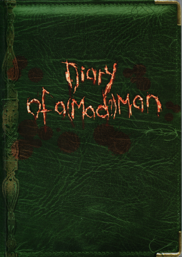

|

|
Diary of a (Mad?) Man
|
Wednesday March 28
Ryan.
There. The first entry in the journal. My own name.
The time is 11‑45 a.m. precisely.
I don't know why I bought this journal. Come to think of it, I don't know why
I'm writing in it. Never kept a journal before, not even those little diaries
when I was a kid. I won't write about the dreams - not in detail. I'm not
committing my nightmares to paper.
Enough of that.
If anyone's interested, I was twenty‑six last Monday. I didn't celebrate the
birthday. Now what shall I say? Am I writing this, in my neatest hand, for
myself, or someone else? Eden, perhaps? No. Not Eden. I love her - at least I
think I do, but I wouldn't want her to know ALL my secrets. Am I penning this
for myself? Yes - in part, but only in part. To someone out there, who'll maybe
read this in fifty years when I'm dead? Or even for a stranger's eyes in a
remote future epoch - ten, twenty thousand years from now, when I'm a nobody of
ancient history, one more item on the archaeological list? Who are you, anyway?
I wonder what you're like, reader.
Funny - I hadn't meant to wander off like that. Lets started DAMN, my first
mistake, and this so early. As I was saying… Let's start with today…
I was browsing through one of those old curio shops in Rackham Lane, looking
for - well, nothing in particular, when I saw this old, dark green leather‑
bound journal with an embossed pattern down the side in a faded golden colour.
What is it they call that fancy patterning? Tooling, I think. Whatever. The
book lay there on a back shelf, smelling slightly musty, as old as the century.
The off‑white pages inside, like old snow, begged to be covered in marks, I
recall the journal was beside one of those glass globes that whirl up a
snowstorm when you shake them. Jeez - why did I bother to slip in that little
observation? Who cares? I'm still not sure why I bought the journal, but then,
we all do things for no good reason almost every day, don't we? Or is it just
me? No, I don't think I'm that unique.
I got a pen to go with the journal, one with a nib that you stick in an ink
bottle. An old‑fashioned pen for and old‑fashioned book. Out of character, Eden
would say it if she knew. Louis - he's a friend, of sorts - would say the same.
Shows how much even lovers and friends know about you. I'm supposed to be this
streetwise, life live‑for‑the‑moment guy. Whatever the hell that's supposed
to mean. But we all have our hidden sides, all of us. No, scrub that last
thought… I've just remembered a whole batch of creeps that have crossed my path
over the years - they didn't have ANY hidden sides.
The TV's on, in the corner of the room. There's some jerk just come on the
screen, one of those mainstream rock stars in his late twenties, wearing a
watch that'd cost me, and most people, a year's wages. Is this fair? If you
think so, you're either rich or crazy. Okay, some performers are talented, but
David Crane, lead‑singer of Araknophobia, sure as hell isn't one of them. But
maybe you're a fan, and want to strangle me with a guitar string. (It's odd how
I keep writing as though some stranger's going to read this, but maybe all
dairi diarists do that. Wouldn't know. I'm new to this game.)
Well, its late, there's nothing on the box, and the bed looks inviting.
Last night, I dreamt that I murdered a man.
Strange things, dreams.
Thursday March 29
8‑30 in the evening and all's well.
Work's over for the day and - No, I won't talk about work. I'm glancing around
my flat at the moment. It's scruffier than usual, considering Eden will be here
in an hour. She's always trying to get me to tidy up. The bathroom isn't too
much of a mess - I can see into it from my table near the window. The kitchen
door's open too. The kitchen's pretty clean, by my standards - all I ever use
is the microwave. Microwave Man. As for the living room‑cum‑bedroom, it looks
as if half a dozen students lived in it. Stained walls. Dusty almost‑wall‑to‑
wall carpets. The carpet has its decorations - screwed‑up socks and crumpled
shirts and cigarette stubs that have somehow escaped the ashtrays. Uh‑oh - I've
just spotted a rubber under the bed. So THAT'S where it got to. Be back in a
moment…
HERE Her again Here again. The flat's a lot tidier. Sorting out the rubber
got me going on the rest of the place.
Eden is coming round, after all - got to show willing. Still looks a dump,
though. She won't be wildly impressed. I've never understood what she sees in
me. She's definitely up‑market. You should see her apartment. Plush, plush and
more plush. You can tell she's in a high‑flier job. Something to do with
communications consultancy and P.R.. I don't ask. She's always going on at me
to get a proper job. Has no‑one told her there aren't that many jobs around?
Serving booze in Sparky's bar isn't MY cherished vocation, either. That's it -
I've said it - I'm a barman. And Sparky's, my boss, is an overweight, hairy
slob. The type that walks around in a string vest. You know the kind? Yeah,
sure you do. I've just looked out the window, down at street. The window‑panes
are grubby, if you hadn't already guessed. It's raining, and the street is
smeared yellow with the lights of sodium lamps. There are a lot of figures in
raincoats down there, going somewhere or nowhere. I read once that most people
live lives of quiet desperation. Could be true. God, this flat's empty without
Eden. But she'll soon fill it, with her perfume, her voice, her presence. She
promised she'd stay tonight, I can see her now on bed, pale and smooth and slow
and easy, her black hair long and lazy on the pillow. When she's naked, shes
has the eyes of a child. Then, in the morning, she dresses for work, and she's
someone else.
Sometimes I love Eden. Sometimes I don't. But when she's not around, I always
miss her. I reckon most people are like that.
Well I'm not writhing any more today. Signing off, or whatever diarists are
supposed to say.
Me again. It's after midnight. Eden didn't come. She phoned, made her
apologies, explaining about work‑loads and dead‑lines. I said I didn't mind.
I'm a good liar when I want to be. Ten minutes later, Louis turned up,
scratching his needle‑scabs and asking if I wanted any drugs. I haven't touched
that stuff in years, but he keeps on asking.
Louis for Eden.
Not much of a trade. He started to babble about imaginary spiders, brushing
them off his sleeves. I had to kick him out.
I watched TV for an hour. It was a programme on serial killers. No, I'm not
especially homici morbid. There's been this serial killer scaring hell out of
the city for the past few months. The media have dubbed him the Dealer because
he has this thing about playing cards and -
No, I don't feel like writing about the Dealer tonight.
It's still raining, and the street below is deserted. Everywhere, there's a gap
that's shaped like Eden.
I don't want to write about the dreams.
I've been staring at the bed - it's not inviting tonight.
Friday March 30
11‑32 p.m.
Eden went home ten minutes ago. She came round on a surprise visit, and found
the flat in one hell of a mess. That's the trouble with surprise visits. You
ever have that trouble? Bet you do. She wrinkled her nose and said that there
was an unhealthy smell. I hadn't noticed it, which probably says more about me
than it does her. And she pointed out all these spiders that have moved in
since she last came. True enough, a fair number of cobwebs have sprung up in
the corners, but spiders keep the flies and bugs down, don't they? Well, that
was my excuse. She let it go without a fuss.
I love Eden.
She told me that her parents intended to call her Eve, but decided on Eden -
less common. Never knew that. I like those little details.
The sex was okay, which means it wasn't okay. With me and Eden, the sex has
always been a lot more than okay. Whatever. We fell asleep. Bad move.
I woke up shuddering, my heart performing a bongo ryth rhythm. Eden just
stared at me with big, scared eyes. She said I'd been talking and screaming in
my sleep. Talking about God and the Devil and the Seven Sleepers - and the
woman I was murdering. Jeez - no wonder Eden was frightened. Somehow, we calmed
each other down with soothing words about dreams only being dreams, made coffee
and small talk. And then we watched TV. Another bad move. There was a fresh
report on the Dealer. He'd murdered a woman in her flat a mere couple of blocks
away an hour before Eden arrived. Eden gave me this look. There was no obvious
accusation in it. No real hint of fear. Just - this look. I knew she was
thinking about the black‑outs I've suffered since my late teens, but she didn't
say a word. She gave me a half‑smile and a half‑hearted kiss, then I was
looking at a closed door and listening to the clack of her heels receding down
the corridor.
I've been looking out the window for the best part of a hour. The rains eased
off. Somewhere, out there, I thought, is the Deal Dae Dealer.
Then I started to wonder about the Seven Sleepers. I'd read about them a long
time ago. I was an avid reader once, before I flunked college and discovered
the bottle. Maybe I'll pay Central Library a visit tomorrow.
Then again, maybe I won't.
Saturday March 31
2‑15 a.m.
Okay, it's not Saturday any more by the clock, but it FEELS like Saturday, all
right? Work was a bitch. Sparky was a bastard. They went well together. A
twelve‑hour shift, ending in two in the morning, and I stayed off the booze
every minute of it. But Sparky was on my back all the way, riding me about my
attitude, how I washed the glasses, every damn thing. I bit my tongue and took
it, I need the money.
I called Eden five or six times from work, when Sparky wasn't looking, and left
messages on her answerphone. I think I need Eden more than I love her.
I've been thinking about religion.
The Dealer didn't kill anyone tonight.
I never went to the library.
Sunday April 1
11‑20 a.m.
Last night God came to me and told me to murder people. He was dressed as Santa
Claus and wore dark glasses.
Maybe it was an April Fool's joke. Perhaps God has a black humour. You tell me.
It was only a dream, I tell myself. Only a dream. I'm writhing this in a bar.
No, it's not Sparky's bar. I never drink in Sparky's bar, not on the other side
of the counn counter anyway. I've downed my first whiskey of the day. I'll be
drunk soon, I hope.
Memories of Eden have banded together, ganged up on me. I'm sitting, glass in
one hand, pen in the other, staring back down the years. I see Eden in her blue
raincoat and red scarf, leaning against the railings of the college main hall.
I've noticed her before, but for the first time she smiles at me. Her smile is
- Eden. Can't express it any better. That Eden smile saw me though months,
years, as she rose higher and I sank lower.
If only I hadn't had those black‑outs - there I go again. Excuses. Self‑pity.
If I'm a loser, it's because I played the cards I was dealt badly, not because
I was dealt bad cards.
It's started to rain again. I watched the puddles forming. There are a lot of
empty glasses on my table. Can't remember how they all got there. Eden hasn't
been answering my calls. Maybe that's why I'm eyeing the girl at the bar, her
face frosted with powder, mouth slashed red with bright lipstick. She looks
cheap - as in cheap by the hour.
Sometimes you take comfort wherever you can find it. Even counterfeit comfort.
10‑56 p.m.
She left my flat an hour ago, about the time my hangover wore off. Her name was
Angel, she said. For me, she was an angel for a while, a ministering angel. And
she was my priestess‑confessor. I told her everything. I told her stuff I
daren't commit to paper. Everything. She didn't judge. She didn't condemn. Oh
sure, I know why - she didn't damn well CARE. Doesn't matter. I feel absolved,
stupid as that sounds.
I haven't a clue what she felt - if she felt anything.
She had fresh bruises all over her body, some purple‑angry. I asked where she'd
gotten them. 'Part of the job,' she replied, 'Customers get what they pay
for.'
Angel was wearing a small fortune in the slim shape of a watch. I recognized it
as the one David Crane wore on the TV broadcast. When I pressed her about it
she refused to admit anything - professional‑confidence - but her expression
told it all. The watch was from Crane, rock‑idol and darling of the chat shows.
The bruises were from him too.
I had damn all money to give her. She didn't mind.
I want to see Angel again.
I know I won't.
11‑12 p.m.
Eden just phoned, asking if I wanted her to come over.
I didn't want to see her.
I told her to come right round.
Monday April 2
11‑23 p.m.
Yesterday, when I had sex with Angel, I hardly thought about Eden. I don't love
Angel. Last night, when I made love to Eden, I thought about Angel all the
time. I love Eden.
Life is a Leonard Cohen song. We speak in code because we think in riddles.
Eve was hardly though the door when she asked me about the black‑outs. Where
Were they getting worse? I mumbled something or other. Then she took me by the
hand and sat me down on the bed. And she smiled that Eden smile, that smile I
saw years ago, when we were first‑year college students. At that moment, I was
certain of two things =
I would never love anyone as I loved Eden, and I was the last man Eden should
have for a lover. It wasn't just that she was a winner and I was a loser. I'm
not proud. I couldn't could live with that. No, it was more than that - in a
rare instant of reval revelation, I knew I was death. But I couldn't find the
words to tell her. I'm still struggling to frame the words, explain the
insight. What to say? That I'm Death himself, The Grim Rap Reaper? No way -
nothing so grand. Perhaps, in a way, I'm Death‑for‑some, except I'm not sure
what that means. And I'm also a dead man, but I haven't much of a clue what I
mean by that either. The revelation was just too damn big for words, let's
leave it at that. After a while I started to follow what Eden was saying. She
was talking like a love‑saint.
She was telling me about faith. Not chapel‑and‑bible faith, but human faith,
faith between lovers. Eden was saying she was sorry for not trusting me, for
suspecting that I might have caused‑harm. Okay, she admitted. So I had black‑
outs - she'd seen plenty of them over the yae years - but I'd never hurt
anyone while I was lost to the world. She put her arms around me and insisted
that there was no danger in me at all.
She was wrong, but I said nothing.
Somehow we ended up naked under the sheets. Maybe that sounds like a phoney
line, as if I stuffed a lap‑dissolve in a movie, but that's almost how it
seemed to me - a shift from scene to scene.
A whole rabble of fears erupted inside my head. SHE'S MAKING LOVE TO DEATH, I
thought. My love will kill her.
But what the hell was I supposed to do?
Claim to have a headache?
So I thought of Angel as I went through the actions with Eden. Somehow, Angel
was immune. Death couldn't touch Angel, I KNOW it sounds crazy, but…
Sometime deep in the night, we fell asleep. And, of course, I dreamed my
dreams. She shook me awake in the early morning, her face as pale as the dawn
light. I'd been taki talking in my sleep, she said. Screaming in my sleep.
Like I was in hell. She asked me who the "Deliverer" was. The name sent a chill
through me, although I couldn't figure out why.
After Eden left, I lay on the bed for a couple of hours, counting the cracks on
the ceiling. Then I heard SYMPATHY FOR THE DEVIL on the CD player and I got out
of the flat fast. In case you're wondering why I was so spooked, I don't have
any Rolling Stones' CDs.
I went to the library a couple of hours before work, and took out four books on
religion and mythology. Then I wandered around, looking for an old church, an
empty church. Don't ask me why. Some obscure need. Who knows? I ended up in a
mean area, above the Italian Steps. Narrow, crooked alleyways - not a lot of
sky. I passed a window painted black and entered a small square with a dry
fountain.
That's where I saw the church. It was one of those grey, Neo‑Gothic buildings
with stained glass in the tall, tapering windows. The sign was the worse for
wear and weather: ST SEPTIMUS.
I walked up to the door - almost went in - then turned and walked away. When I
finally arrived at Sparky's, he gave me all kinds of hell for being an hour
late. Can't blame him for that, much as I loathe the creep. Next time even one
minute late -I get the sack. Won't break my heart.
Haven't read the library books yet.
I watched the TV.
The Deliver Dealer didn't kill anyone today.
I'm afraid to go to sleep.
Tuesday April 3
9‑27 a.m.
I've made a decision. A FIRM decision.
Things have gone downhill since I started this journal. Perhaps writing
troubles down makes them worse. I don't know. I'll try a few days - maybe a
week - of restricting myself to a few brief notes a day. I won't bother reading
the library books.
It came again last night.
11:36 p.m.
The Dealer killed a man tonight.
Wednesday April 4
10‑50 p.m.
My day off work.
Eden rang. Told her I was catching up on sleep and best not to call round.
She's better off without me.
Louise came banging on the door. Told him to go to hell. I'm better off without
him.
The dreams haven't gone away.
The Deliv Dealer didn't kill anyone today.
Thursday April 5
11‑26 p.m.
Didn't sleep last night.
Broke a glasses at work but Sparky wasn't around.
Eden phoned. Told her I was busy.
No murders.
Am to going to stay awake tonight.
Friday April 6
12‑15 p.m.
Stayed awake.
Haven't read lirb library books.
Eden rang. Told her to leave it for a few days.
No murders.
Must sleep.
Something's happening to the eltricit electricity.
Death knocked on on my door but I wouldn't let him him in.
I'm no fool.
Saturday April 7
Slept till mid‑day. Dreams getting worse. Coming nearer.
No reports on the Dealer.
Went to St Septimus - dint didn't go in.
Eden didn't crawl call.
The lights are turning on and off on their own.
I prayed to Angel before I went to bed. She rang me to sleep with an Aver
Maria.
Deliver us from evil.
ON OFF. ON OFF.
Sunday April 8
Dreams still bad
Note sh sure I I woke up.
I watched the light‑switch for 2 hours. It didn't say a word.
Spiders everywhere.
The Deliverer killed a woman today.
Sunday April
Monday April 9
The clock keeps going round.
It won't teel tell me the time.
Santa Claus gave a gun to me.
Let lose the puppies of war.
I died last night.
Tuesday April 10
Today was not a good day.
Wednesday April 11
My name is Ryan, and I'm afraid I'm losing my mind.
I'm sitting here, by my table, in my may my flat, writing very slowly. Very
carefully. Yesterday I took a step that either drove me insane or saved my
sanity. I'm not sure witch which. Yesterday I accepted that the impossible
might be true. That Santa Claus might be real.
No. That's not it. Concentrate, Ryan. Concentrate.
I've read the books. I think its evening now. Yes - its evening.
God, there are spiders all over my flat - living room, kitchen, flat,
bathroom. O, what tangled webs they weave…
Can't concentrate. Don't think I've eaten for a week. The flat stinks. I stink.
That stuff I wrote over the last weak week - must have been miles out of my
head. Haven't left the flat for a week - I don't think. Hard to say.
I'll tell you the truth, if I can keep my thoughts still - ther they're rowdy
little boys running about in a playground.
I haven't told you my secrets, not since I brought bought this journal. If
you're reading this, you'll know what I've done to the cover. I cut a title
into the leather binding. It took me a long time, because I used I used my
fingernails to cut out the words. My nails bled a lot and that's why there are
stains in the leather. Blood and skin. I cut out the title DIARY OF A MADMAN.
Then I thought, about an hour ago, what if I'm not mad? What if the dreams are
true? So I dug my nails in again, and sliced brackets around MAD, then carved a
question mark. My nails are a bit of a mess. So that's the story of the title.
Now I'll tell you the story of the story. God didn't speak to me. Santa Claus,
Blood on his Beard.
No - I'm losing it again. Must get out of the flat. Eat. I'll tell you latter
later. Yes go out. Go to church.
Church.
12‑15 a.m.
I'm sane, for the moment. As sane as I get, that is. These bouts of sanity
don't last long. So I'll write fast while I sit still have my marbles.
I went out three, maybe four hours ago. I must have eaten - my stomach feels
full. Enough of that. I went to the church - to St Septimus. While I was
climbing the Italian Steps I heard following footsteps. Didn't take any notice
at first - no reason to. Then I stumbled over a step. The footfalls stopped. I
looked back into the dark. The dark was too dark, it hid whoever was there. I
carried on. The tracking footsteps started again. I stopped. They stopped. I
continued on. They followed. Just like on the movies.
Imagination, you say? The imagination of a madman? I don't think so. You
weren't there. You don't know what happened next.
The door of St Septimus was open. Wide open. At first I thought there was a
late service, but I discovered the lights were off when I slipped inside. There
were plenty of candles, congregated on the altar, in shrines, at the feet of
statues. Not a soul in sight, and all those lighted candles. What church leaves
its doors wide open at night with the lights off and the candles burning? Make
sense to you? I know I wasn't mad at the moment. I'm SURE I wasn't.
When you're inside a church, you walk quietly, don't you? I moved softly all
the way down the nave, eyes fixed on the altar. Then I heard muffled steps
behind me.
I spun round at the instant the back of the church went dark in a sputter of
dozens of candles. There were two candle‑racks at the rear of the church, one
each side of the door, some twenty feet apart. And the candles went out at the
same moment. Whoever was back there had quenched the flames SIMULTANEOUSLY.
Then I thought, there must be two people back there. Although two individuals,
acting in synchronicity, extinguishing at least twenty flames each, and all in
a microsecond, was as wild a notion as a single man with twenty‑foot‑span
arms.
I waited there, near the altar rails, for someone to move, speak, even BREATHE.
Nothing.
The waiting game got too much for my jangled nerves.
"Anyone there?" I called out.
Answer came there none, as the poet would say, but there was a powerful sense
of - what shall I call it - BAD PRESENCE. Yes, a bad presence in the dark at
the back of the church.
I admit I was scared. Maybe you think you wouldn't have been. But you weren't
there. I hesitated, not knowing whether to advance or retreat.
Then the blindingly obvious struck me. If I hadn't been enfeebled by my week in
Limbo I would have realized earlier. There were scores of candles in the rest
of the church. More than enough to enlighten the blackness around the door. As
they put it in the very worst of novels - some blasphemous, tenebrous miasma
lay upon the benighted air. Let's just say the back of the church was black as
sin.
That's when I tasted raw dread on my tongue.
Fear can make you act like a hero as easily as a coward. The spur of terror
drove me to attack, not retreat. Another flip of the coin and I'd have run in
the opposite direction just as fast. I raced at the coagulated blackness,
shouting my head off. I've no idea what I shouted. Some token defiance, I
suppose.
The darkness split in two the instant I plunged into it. I glimpsed a fleeing
something or other to the right, darting down the side of the nave.
And I saw, much more clearly, a man streak out of the arched doorway. By the
time I was out in the open, he was gone.
But his after‑image stuck in my brain. As I caught my breath, I settled on that
image, and a smell that accompanied it. In the dark behind my eyes, I saw the
man's face, pale and vivid, and the smell - the unmistakable, coppery scent of
blood.
Yes, my mind's clear now. I can sense the clarity of it as I write. I hope my
sanity remains long enough for me to tell you all I know.
I saw his face, and smelt the blood, yes. But there was one more detail. His
suit, as far as I could discern, was dark and unremarkable, but there was
something sticking from a oversized breast‑pocket. A playing card. I couldn't
be certain, but I'd lay long odds that it was the Queen of Hearts. The huge
breast‑pocket bulged fit to burst. I didn't take much note of that at the
time.
Not until I got home and switched on the TV.
The news came on ten minutes later: The first report was of the Dealer. He'd
claimed another victim. A middle‑aged woman, Lisa Carrack, mother of three, her
heart cut out, and another heart - the previous victim's, pushed into the
cavity, along with a card: The Queen of Spades. The woman was black. The
Dealer's special brand of humour. Site of the murder: The Italian Steps
district.
That's when I remembered the big, big breast‑pocket. Big enough for the
roomiest hearts. As for the card…
The Queen of Hearts was for his next victim. A woman who deals in love,
perhaps?
Angel?
No - could be any number of woman.
I waited almost an hour, then a fresh report came in. Another victim, on the
city's east side: Julia Rivelo, her heart replaced by Lisa Carrack's, with the
Queen of Hearts as the Dealer's calling card.
Mixed with the revulsion - and sympathy was a small amount of relief: relief
that I wasn't the Dealer: With my mounting insanity, my blackouts, my lost
days, I'd begun to fear that a Mr Hyde had been loosed in me.
Didn't you wonder that, if only for a moment.
But I had another cause for relief. The voices in my dreams had been validated.
They'd told me to kill this bastard.
Oh yeah, I'd seen him before, in dreams, in terrible dreams. Sometimes I killed
him. Sometimes he killed me. But whenever we met, in dreams there was death.
Well, Dealer, I'll show you a new pack of cards. The Tarot pack. The trump card
is Death. And Death's also the name of the game. There's coincidence and
coincidence, and tonight's streak of dark flukes was too much to put down to
happenstance. Something had guided me to St Septimus.
I know that psychotic murderers hear voices in their heads, commands from their
dreams, ordering them to kill for God or the Devil. That's what's terrified me
these past few weeks.
But this was different. This was like being asked to kill Hitler.
God, I'm tired. I need to get my strength back.
Tonight, I won't be afraid to sleep.
Tomorrow, where shall I start out on the hunt? St Septimus?
Yes, St Septimus.
Thursday April 12
11‑05 p.m.
Eleven‑o‑clock and all's not well.
I've just read what I wrote last night. What confident words! Today, I'm not so
sure, although I've managed to keep my grip on reality.
I went to St Septimus, but I was haunted by a number, every step I took. The
number seven. No, I'm not superstitious. It's something from the dream. The
killing dream. I think I'm being asked to kill - execute - more than the
Dealer.
Those library books - when I finally read them - stirred up some sludge in my
mind, murky images of a dream. I saw the Seven Deadly Sins in human form,
wearing masks. As for the Seven Sleepers of Ephesus, legendary Christian
martyrs hidden in a cave, lying in suspended animation, biding the time of
their return - I'm not so sure. Could mean something. Could mean nothing. Maybe
it's the number that matters, Seven. It's one of those sacred numbers after
all…
Seven days in the week. Seven seas. Seven Deadly Sins.
Seven Brides for Seven Brothers?
Right - real funny.
St Septimus was as empty by day as by night. I sat in the front pew for an
hour, then scoured the church for clues, coming up with nada. Looking for the
priest, I tried the door to the sacristy, but it was locked. That's when I
REALLY started to wonder about the pastor of St Septimus. Why was his church
left unsupervised? I felt that I was being watched in that quiet church. Sure,
that's the oldest feeling in the book, usually unfounded. Whatever, I had the
strong sensation that something or someone was observing me. To tell the truth,
I suspected that even the STATUES were staring at me.
Such grotesque statues, too… A blind archangel, with broken wings. A saint with
a halved skull sprouting out of his collar. A cherubim with two heads.
As for the stained‑glass windows, it took me some time to work out the
bewildering displays - chaotic, at first glance. Then I grasped the underlying
motif in each window: heaven and hell. Fair enough, you might think. Except
heaven was in the lower half of each window and hell was upper. Hell looked
down on heaven. Demons lorded it over saints.
God and the church of St Septimus were obviously not on the best of terms. But
all this grotesquery didn't point me the way to the Dealer.
I sat down near the altar, ready to chuck in the towel for the day. Not even a
clue in sight. Then it hit me, and I cursed myself for my stupidity. It was in
a name:
St Septimus.
Septimus: Seven.
That number again.
Killing the Dealer - I'd be willing to play God on that score. Right or wrong,
I'd do it - if only to spare future victims.
But if there were six others…
Seven slaughters…
No. No way. That would make a serial killer of ME.
I won't do it.
I won't
I've just realised something - tomorrow's Friday the thirteenth. I'm not
superstitious, but…
The bedside lamp has just turned itself on. The open bed is a trap, waiting for
me to fall right in.
There's a spider on the pillow.
Friday April 13
3‑15 p.m.
I lost my mind this morning. It was a hard fight to get it back. He's coming
nearer, that being in the dream, the one I thought was Santa Claus when my wits
were in bedlam. He has a red robe, a hooded red robe. And that's about all he
has in common with Father Christmas. I don't think this guy is bringing me any
presents.
There's a remorseless quality about him. Stern. Inhuman. Maybe he's the Devil,
after all. His voice was remote, like a monastic bell from a coastal island. He
said he was coming for me tonight. I distinguished two more words: Arachne…
Deliverer…
I'm glancing at the spiders in my room, the festoons of cobwebs. I think I can
guess what Arachne signifies. As for the identity of the Deliverer, something
inside tells me to simply look in a mirror.
The light‑bulb keeps flickering on and off. At this rate, it'll be strobing
before midnight. The microwave has just turned itself on. I think I know who's
behind the electrical anomalies:
Me.
Microwave Man.
I'm changing. I can feel it. But I can't tell whether I'm going mad or doing a
butterfly from chrysalis number. Hell - I haven't even crossed out a single
word in pages! Surely that means I'm not losing my wits? No, on second
thoughts, it doesn't mean a thing.
I'm afraid
I'm growing, metamorphosing into - God knows what. Or I'm becoming a complete
madman. Either way - I'm afraid.
A spider has spun a web over my pillow.
11‑50 p.m.
I'm still looking at the web on my pillow. I think I'm beginning to understand
the pattern.
We speak in code because we think in riddles.
Arachne… in Greek mythology, a maiden transformed into a spider. Arachne,
spinner of webs.
Webs.
Dreams.
The Seven.
It's swirling round in my skull.
I read an ancient Gnostic gospel a short while back, The Gospel of Truth.
There's a passage in it that's known as the Nightmare Parable. I found a lot of
unnerving echoes in it. Here - I'll write part of it down:
'… they lived as if they were sunk in sleep and pound themselves in disturbing
dreams. Either there is a place to which they are fleeing… or they are striking
blows, or receiving blows themselves, or they have fallen from high places...
sometimes people seem to be murdering them, though there is no one even
pursuing them, or they themselves are killing their neighbours, for they have
been stained with their blood…'
The writer of that gospel viewed human life as a sleep of ignorance. And
ignorance the source of evil.
So should I listen to - dreams?
God, the panic's coming back. I'm going crazy - or inhumanly sane - God help
me, either way.
Sleep.
Sleep's dragging me down.
Angel, Eden, help me. Don't let midnight strike!
I renounce everything. I'll burn my books. Eden, I'm falling.
Falling. Sleep. Dream. Web.
Saturday April 14
My name is Ryan.
I am the Deliverer.
I am the executioner.
Hunter of the Seven.
It's like killing Hitler.
Things to remember:
Door Code – 5106
Garbage – Wednesday
Eden's Birthday – 17th Feb.
Network password – Howard Blackdragon